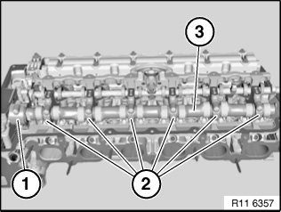
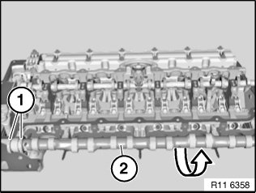
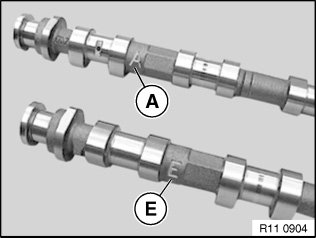
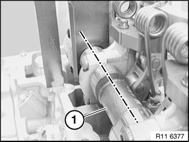
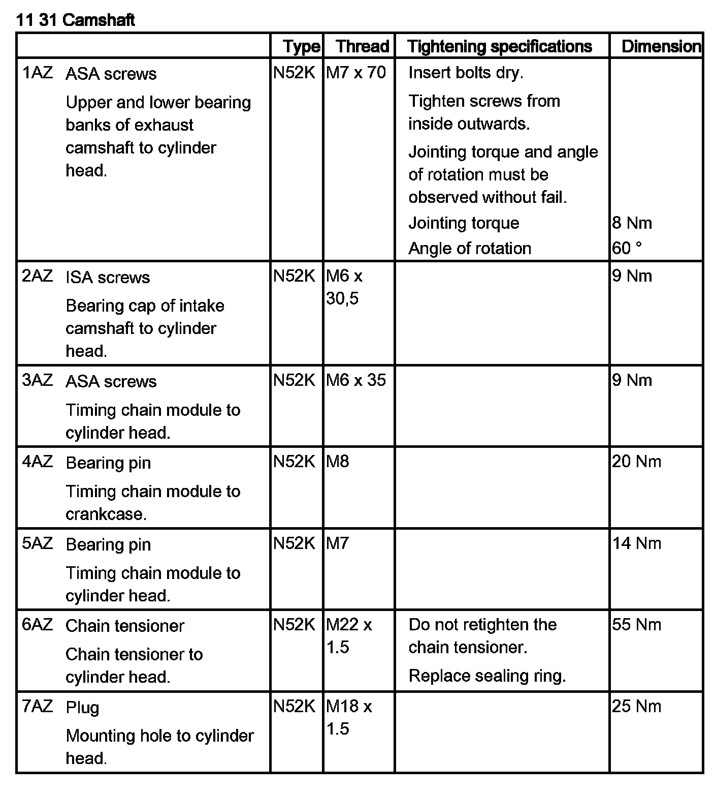

Removing and Installing/Replacing Inlet Camshaft
11 31 025 Removing and installing/replacing intake camshaft (N52K)Special tools required:
Important!
Aluminum-magnesium materials.
No steel screws/bolts may be used due to the threat of electrochemical corrosion.
A magnesium crankcase requires aluminum screws/bolts exclusively.
Aluminum screws/bolts must be replaced each time they are released.
Aluminum screws/bolts are permitted with and without color coding (blue).
For reliable identification:
Aluminum screws/bolts are not magnetic.
Jointing torque and angle of rotation must be observed without fail (risk of damage).
Necessary preliminary tasks:
^ Remove cylinder head cover
^ Remove intake camshaft adjuster
^ Remove intermediate lever
^ Adjust valve timing

Note:
All bearing caps (1 and 2) are marked with numbers from 1 to 6.
Bearing cap (1) is a thrust bearing.
Release screws on bearing caps 1 to 6 (1 and 2).
Tightening torque 11 31 2AZ.
Set all bearing caps down in special tool 11 4 481 in a neat and orderly fashion.
Remove intake camshaft (2) towards top.
Installation:
Clean all bearing points and lubricate with oil.


Important!
Plain compression rings (1) can easily break.
Plain compression rings (1) are engaged at joint.
Press plain compression rings (1) apart upwards and downwards and removed towards front.

Important!
Markings of intake and exhaust camshafts are different.
Mixing up the intake and exhaust camshafts will result in engine damage.
A Exhaust camshaft.
E Intake camshaft
Insert intake camshaft (1) so that part number on mounting flats points upwards.

Position intake camshaft (1) so that cams point upwards at an angle.
Attach special tool 11 4 281 to mounting flats.
Assemble engine.
